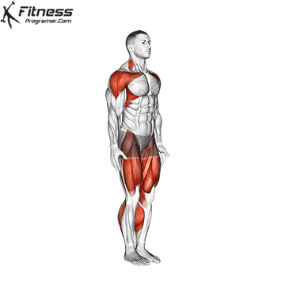

Jumping jacks, so vaja za kalisteniko, ki jo izvajamo s skakanjem v položaj, kjer so noge široko razprte, in roke se dotikajo nad glavo, nato pa se vrnemo v položaj, kjer so noge skupaj in roke ob straneh. Jumping jack je kardiovaskularna vaja, ki vključuje več mišičnih skupin, vključno z nogami, rokami in trupom.
Oseba, ki izvaja vajo, stoji pokonci z nogami skupaj in rokami ob straneh telesa. Nato skoči v zrak, medtem ko razpravi noge široko in hkrati roke dvigne nad glavo, tako da se dotaknejo. Nato se vrne v začetni položaj, s skokom, ki združi noge in spusti roke ob straneh. To je ena ponovitev (ponovitev). Ponavljajte gibe brez prekinitev.
Trajanje: minut
Kalorije: kcal
Vrsta:
Težavnost:
Kratek opis: